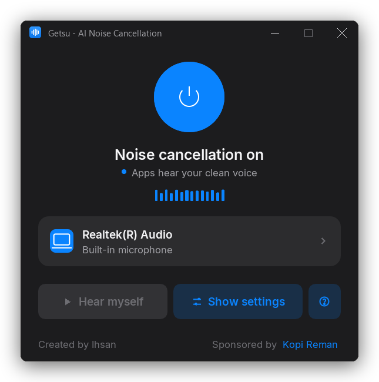

Keyboard and mouse clicks
Mechanical switches and rapid clicking are quieter in the voice your friends hear.
Real-time noise cancellation for Windows. Getsu removes keyboard clicks, fan hum, room noise and background voices from your microphone, for Discord, Steam, Zoom, OBS and your games at once.

Getsu comes from two Acehnese words: gèt ("good") and su ("sound").
I built Getsu because I play Dota 2 with friends who are too broke for RTX graphics cards, studio mics, or Krisp subscriptions. Our calls were full of fan roar, mechanical keyboard clatter, and the occasional family drama in the background. I wanted a simple tool that runs locally on any normal CPU, costs nothing, has zero tracking, and gets out of the way.
Getsu removes keyboard clicks, fan hum, room noise and background voices from your microphone, for every app at once: Discord, Steam, Zoom, games and OBS.
Mechanical switches and rapid clicking are quieter in the voice your friends hear.
Steady background roar from PC fans, laptop cooling pads and air conditioning.
Family or a TV in the next room stay out of your call while you speak.
An 80 Hz filter removes low thumps from footsteps, desk knocks and 50 or 60 Hz hum.
Apps set to the Default microphone get the clean voice automatically.
Audio is processed on your PC, never saved, and never sent over the network.
Install, pick your microphone, and start.
Download the installer and run it. It sets up the free virtual audio cable that carries your clean voice to other apps.
Open Getsu and choose your microphone in the microphone card.
Getsu starts cleaning your voice. Apps on the Default microphone use it automatically. Click again to stop.
A new interface and several fixes for microphones and headsets.
A new, cleaner window for the power button, your microphone and the settings.
Getsu can start hidden in the tray when you sign in, and turn noise cancellation back on if it was on when you closed it.
Works with microphone names in other languages and with headset microphones that run at 16 kHz.
The noise filter runs about 4 times faster than in v1.3.1.
When you plug in a USB or wired headset, Getsu switches to it.
Windows can no longer leave the virtual cable as your default microphone or speakers.
Improved handling of Bluetooth headsets, and the virtual cable runs at 48 kHz.
When you turn noise cancellation on, a too-low microphone level is raised once, to 95 percent.
Check for updates opens the GitHub releases page. Save diagnostics writes a log file for bug reports.
Measured on a Ryzen 7 5800H laptop. Getsu does not use the GPU, so games keep all of it.
Processing time for every 10 ms of audio.
of one CPU core while cleaning your voice.
CPU while hidden in the tray. About 2 % with the window open and idle.
Your voice reaches your apps about 110 ms later, including the virtual cable. The installer is about 29 MB. Results on other PCs will differ.
Common questions and fixes.
Getsu sends clean audio to apps set to the Default microphone. An app that was locked to your physical microphone needs a change:
Default or CABLE Output. Turn off Steam's own Noise Cancellation.Default or CABLE Output. Turn off Krisp noise suppression.Default System Device or CABLE Output.When a Bluetooth headset uses its microphone, Windows switches it to call quality (mono, narrow band). That comes from Bluetooth, not from Getsu. A separate microphone keeps game audio in full quality.
The file holds the log and the device list. It does not contain audio.
Getsu is open-source software and is not signed with a paid code-signing certificate. Click More info, then Run anyway. The SHA-256 checksum of each installer is listed on the release page.
Your voice stays on your PC.
Getsu makes no network connections. A test in the source code checks this.
Check for updates only opens the GitHub releases page in your browser.
Audio is never written to disk and no account is needed. The source code is public on GitHub.
Krisp and NVIDIA Broadcast are different products. Check each vendor for current prices and requirements.
| Getsu | Krisp | NVIDIA Broadcast | |
|---|---|---|---|
| Price model | Free, open source | Subscription, with a free tier | Free |
| Hardware | Any PC, no GPU needed | Any PC | NVIDIA RTX graphics card |
| Works in | Every app that uses the microphone | Any app that uses its virtual microphone | Any app that uses its virtual microphone |
Clean audio files in batches or scripts. It runs on its own, so it works while the Getsu window is open.
Saves the result as recording_cleaned.wav unless you give a path.
getsu-cli --clean recording.wav
Processes every WAV, MP3, FLAC and OGG file in the folder.
getsu-cli --clean D:\recordings\podcast\
Links the left and right channels so the stereo image does not wobble.
getsu-cli --clean track.wav --stereo
Keeps room decay and vibrato. Skips the neural model and uses a longer sustain.
getsu-cli --clean vocals.wav --music-mode
| Option | What it does |
|---|---|
--clean <path> | File or folder to clean (required). |
--stereo | Linked-stereo gating for stereo and multi-channel files. |
--music-mode | Skips RNNoise and uses a longer sustain for music and singing. |
--auto-level | Raises quiet speech toward -24 dBFS. |
--gain <dB> | Adds makeup gain after cleaning (for example --gain 3.5). |
--no-rnnoise | Turns off the neural noise reduction (filter and gate only). |
--no-gate | Turns off the noise gate (neural noise reduction only). |
--report-json <file> | Writes a frame-by-frame JSON log. |
--no-progress | Hides the progress bar, useful in scripts. |
--no-stats | Hides the summary table. |
--check-devices | Prints the audio devices and a diagnostics report. |
--probe-mic | Tries to open a microphone several ways and reports which one works. Changes no settings. |
What to know before you install.
Windows 10 and Windows 11, 64-bit. There is no macOS or Linux version.
Getsu uses the free VB-CABLE driver to pass clean audio to other apps. The installer sets it up.
Windows may show an "Unknown publisher" warning. See the SmartScreen answer in Help.
Krisp in Discord only cleans your voice inside Discord. Getsu cleans the microphone for every app that uses it, including Steam, Zoom, OBS Studio and in-game voice chat.
No. Getsu runs on the CPU, so it works on AMD, Intel and budget laptops without a dedicated graphics card.
Getsu does not use the GPU. On a Ryzen 7 5800H laptop it uses about 2 percent of one CPU core. Test it on your own setup if you want to be sure.
Yes, most of them. Getsu combines an 80 Hz rumble filter, the RNNoise neural network and a noise gate with a short pre-roll buffer, so keystrokes, clicks and desk thumps are much quieter without cutting off the start of your words.
Yes. Your audio is processed on your computer and never saved. Getsu makes no network connections and needs no account.